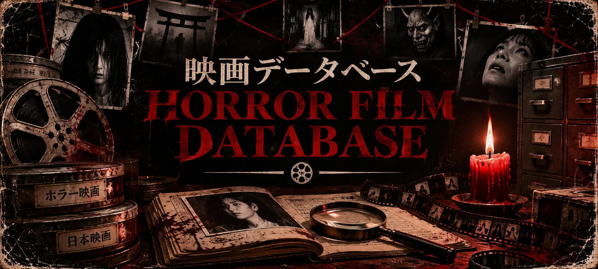

FILE 013 / THE CINEMA INDEX
HORROR FILM DATABASE
A growing bilingual index of horror cinema: directors, years, subgenres and concise editorial notes.
BROWSE THE FULL FILM CATALOGUE →ОТКРЫТЬ ПОЛНЫЙ КАТАЛОГ ФИЛЬМОВ →
POSTER WALL — ALL 30 POSTERS →СТЕНА ПОСТЕРОВ: ВСЕ 30 →

30FILM DOSSIERS
1953–2024CINEMA TIMELINE
日本JAPANESE HORROR